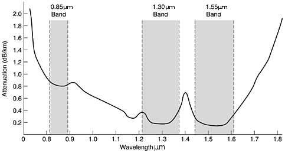
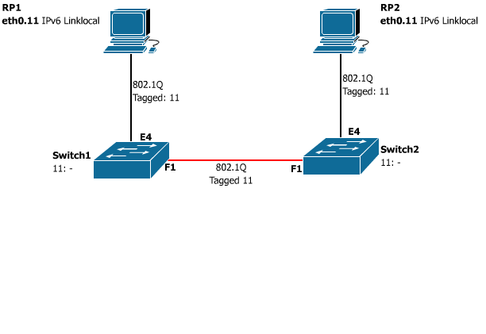

Using wavelengths outside the telecom spectrum
What applications can the unused wavelengths outside of the Tele- com spectrum be used for?
Remy de Boer
Stefan Plug
Contents
- The project
- The additional wavelength
- Proof of concept
- Tests
- Conclusion
The Project
- CWDM
- passive device
- from 1270nm to 1610nm
- 20nm wide channels
The Project (2)
- BeetleFiberOptics
- Low-cost
- Use of extra wavelength
The additional wavelength
| Band | Descriptor | Range [nm] |
| O-band | Original | 1260-1360 |
| E-band | Extended | 1360-1460 |
| S-band | Short wavelength | 1460-1530 |
| C-band | Conventional | 1530-1565 |
| L-band | Long wavelength | 1565-1625 |
| U-band | Ultra-long wavelength | 1625-1675 |
The U-band has been defined exclusively for possible maintenance purposes.Ref: ITU-T manual 2009 P. 134
The U-Band
(1625 to 1675)
|  |  |
Ref: Computer networks, fourth edition. 2002 |
Ref: Reference Guide to Fiber Optic Testing, Second Edition, Volume 1. 2011.2 |
1625nm seems the logical choice
Proof of concept
- Inteno XG6746
- Raspberry Pi
- 1625nm optics
"plug and play"
Vlan 10
- RP-Switch units
- IPv4 default addressess
- RP# SNMP polls only its own switch
Vlan 11
- RP-groups
- IPv6 Link-Local addresses
- Automatic neighbor discovery script
Vlan 12
Out-of-band management
Proof of concept: Issues
- Inteno's closed-source
- Wrong DDM values
| Switch | Tx | Rx | OPM measured Rx |
| Sw1 | -4.61 dBm | -0.44 dBm | -9.8 dBm |
| Sw2 | -4.86 dBm | -0.83 dBm | -12.4 dBm |
Proof of concept: second set-up
- Zyxel properly reads DDM values
- Doesn't support 100mbit SPF
Tests
- Attenuation
- Stability
Attenuation test
OTDR base test, 1550nm, 25 Km, 7.009 dB
| Wavelength | 1M | 25KM |
| 1550nm | -0.05 dB | 8.3625 dB |
| 1610nm | 0.0875 dB | 7.975 dB |
| 1625nm | 2.275 dB | 14.325 dB |
| Wavelength | 1M | 25KM |
| 1550nm | 0.4425 dB | 9.2325 dB |
| 1610nm | 0.62375 dB | 9.2825 dB |
| 1625nm | 2.25125 dB | 14.95625 dB |
Stability test
10-mbit, 15 hours
Total of 62.9GB transferred
45918348 packets
RP1: iperf -suV
RP2: iperf -c fe80::ba27:eb27:ebff:fe58:69e2%eth0.11 -V -b 10000000 -t 54000
Conclusion
Altough 1625nm is more sensitive to:
- distance
- bending
- temerature changes
Still stable over long distances